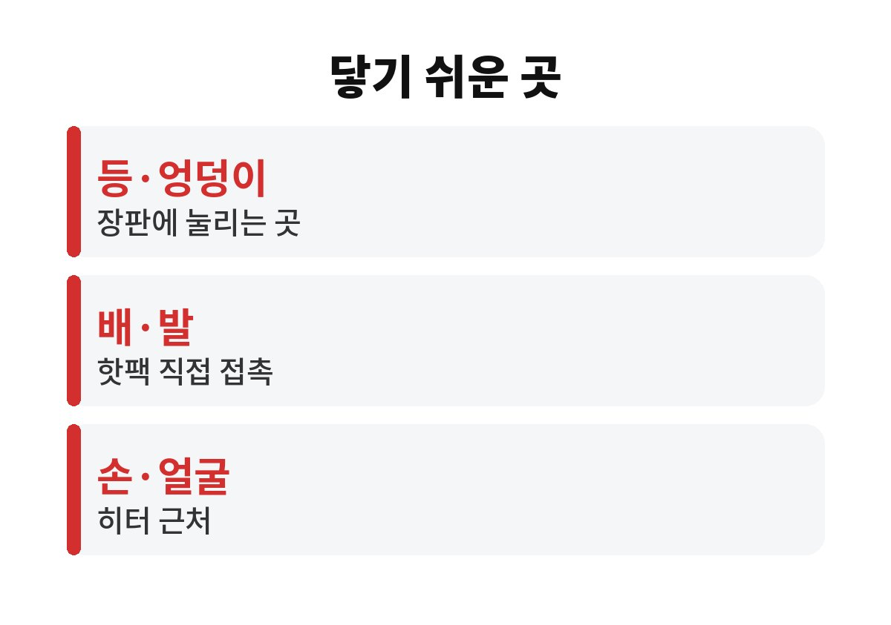
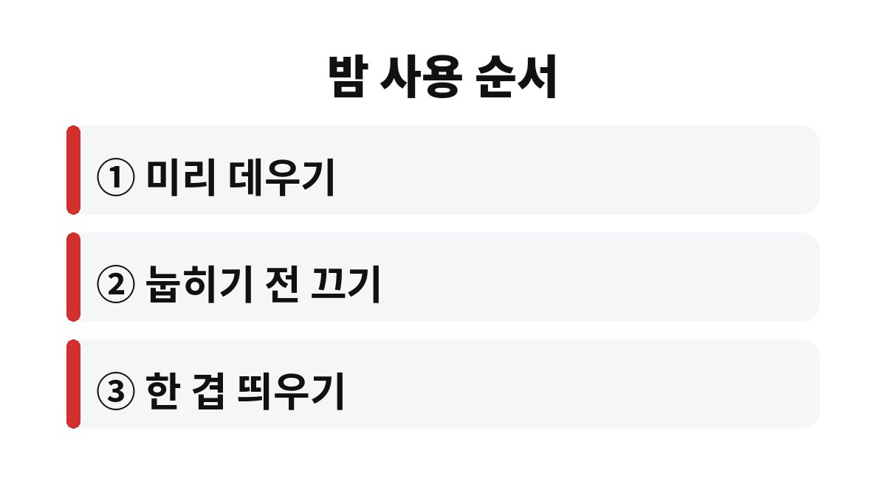

아이 저온화상 예방의 출발점은 전기장판과 온수매트를 아이가 닿는 시간과 자리부터 줄이는 것이다.
저온화상은 뜨겁다고 느끼지 못할 만큼의 열에 피부가 오래 닿아 생기는 화상이다.
겨울밤 아이 이불 밑이 따뜻하면 안심하기 쉬운데, 바로 그 따뜻함이 문제가 되는 경우가 있다.
겨울 새벽에 아이 등을 만져 보니 이불이 훈훈해서 그대로 두는 장면은 흔하다.
아침에 옷을 벗겼더니 허리 아래에 붉은 자국이 손바닥 크기로 남아 있는 일이 실제로 생긴다.
저온화상은 이렇게 통증 없이 조용히 진행되는 것이 특징이다.
어른 손바닥은 아이 피부보다 둔하다.
아이의 피부는 얇아서 같은 온도에서도 더 빨리 열 자극을 받는다.
손으로 짚어 보고 미지근하다고 느꼈어도 아이 등과 엉덩이가 몇 시간 눌려 있으면 얘기가 달라진다.
깨어 있는 아이는 뜨거우면 몸을 뒤척이거나 운다.
깊이 잠든 아이, 열이 있거나 약기운에 처진 아이는 반응이 늦다.
한 자세로 오래 누워 있는 아기라면 같은 부위만 계속 열을 받는다.
저온화상은 온도가 높아서가 아니라 닿는 시간이 길어서 생긴다.
낮은 단계라도 밤새 같은 자리에 닿아 있으면 위험이 사라지지 않는다.
붉은 자국이 며칠 지나도 가라앉지 않거나 물집이 잡히면 소아청소년과나 화상 진료가 되는 병원에 문의해야 한다.
| 난방기구 | 아이가 닿기 쉬운 곳 | 살필 점 |
|---|---|---|
| 전기장판 | 등·엉덩이·종아리 | 잠들기 전에 예열하고 아이는 끈 상태에서 눕힌다 |
| 온수매트 | 등·뒷머리 | 호스와 본체 연결부 물샘이 없는지 확인한다 |
| 핫팩·손난로 | 배·발 | 피부와 옷 사이에 두껍게 감싸 직접 닿지 않게 한다 |
| 전기히터 | 손·얼굴 | 아이 손이 닿지 않는 거리와 쓰러짐 방지를 본다 |

제품마다 안내서의 사용 시간과 온도 설정이 다르다.
그래서 숫자를 외우기보다 우리 집 제품의 사용설명서를 한 번 펴 보는 편이 정확하다.
전기히터는 화상뿐 아니라 쓰러짐과 옷·이불 접촉 사고도 따로 살펴야 한다.
아이가 기어 다니거나 막 걷기 시작한 시기에는 난방기구 주변에 안전 울타리를 두는 집도 많다.
거실과 아이 방 모두 같은 기준으로 한 번씩 훑어 보는 것이 낫다.
화상의 깊이는 겉으로 보이는 색만으로 정하기 어렵다.
저온화상은 겉보다 속 조직이 더 다치는 경우가 있어서 처음엔 가볍게 보여도 며칠 뒤 물집이나 짓무름으로 나타나기도 한다.
열원에서 아이를 떼어 놓고 옷이 피부에 붙어 있지 않다면 벗긴다.
흐르는 시원한 물로 식히되 얼음을 직접 대지는 않는다.
연고나 민간요법을 임의로 바르지 않고 진료를 받을 때까지 깨끗한 거즈로 가볍게 덮어 둔다.
물집이 생겼거나 피부가 하얗게 변했다면 진료를 받아야 한다.
아기가 계속 보채고 만지면 아파하는 것도 신호다.
상처 범위가 손바닥 이상이거나 얼굴·손·관절 부위라면 더 서두르는 편이 맞다.

난방기구를 아예 끊을 필요는 없다.
이불 속을 데우는 용도로만 쓰고 아이는 열원에서 한 겹 떨어뜨려 재우면 위험이 크게 줄어든다.
이미 피부가 붉어졌거나 아기가 보채며 울 때는 사용을 멈추고 소아청소년과나 화상 진료가 되는 병원에 연락하는 편이 빠르다.
※ 2026년 기준 공식 자료를 바탕으로 정리한 일반 정보이며, 아이의 발달이나 건강에 걱정이 있다면 소아청소년과 등 전문가와 상담하길 바란다.